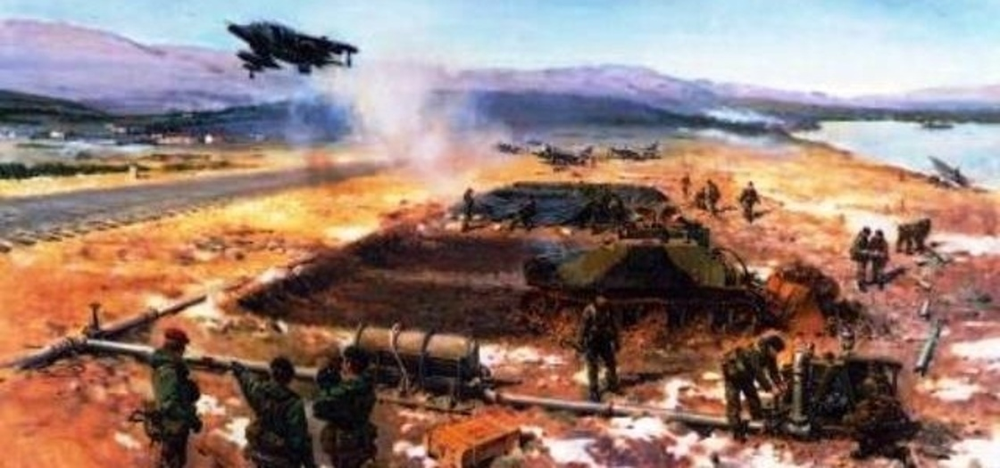
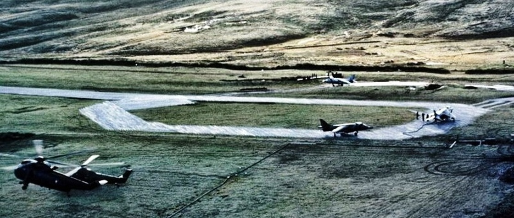
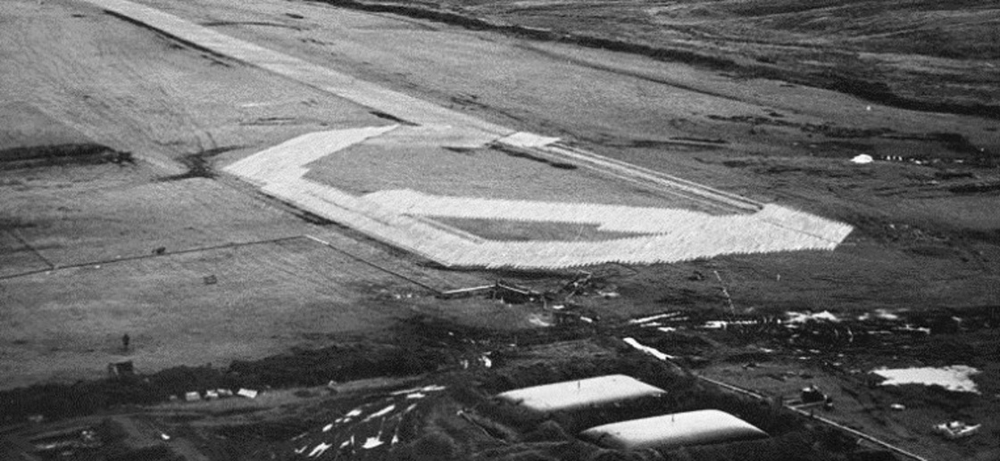
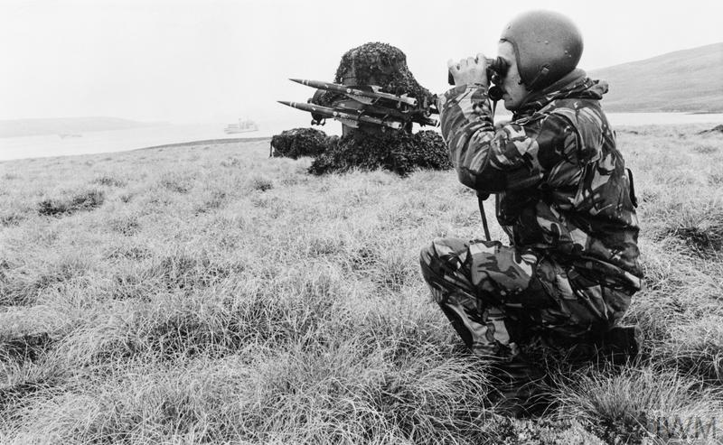
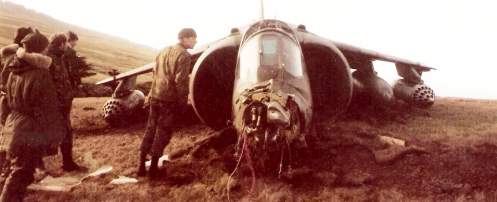
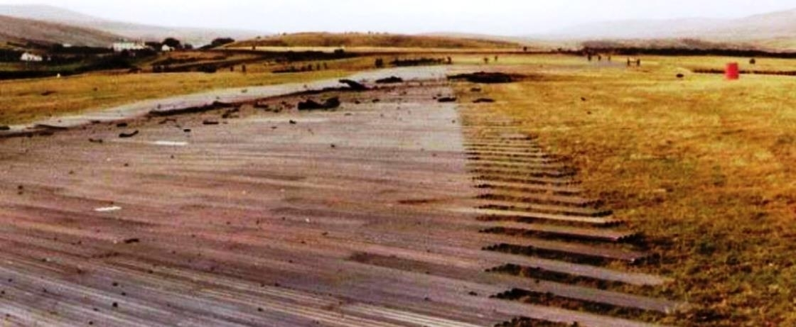
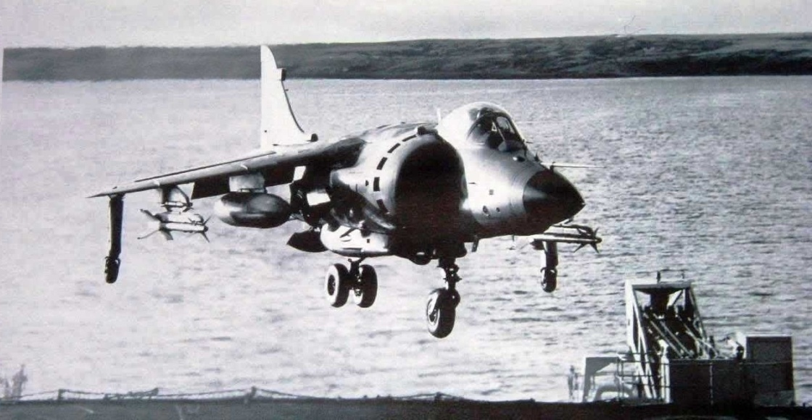
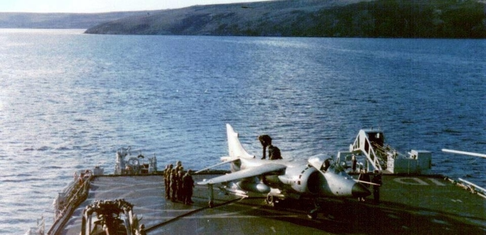
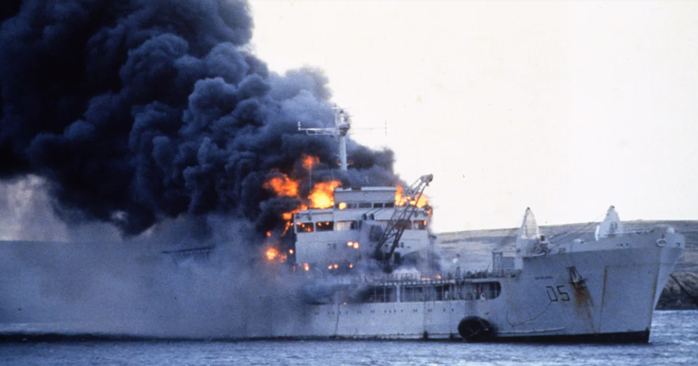

포클랜드 전쟁 잡담 - 불침항모 HMS Sheathbill
게시: 2022-06-02T06:30:16+09:00
포클랜드 전쟁 당시 CAP (Combat Air Patrol)을 수행하던 로열네이비 Sea Harrier들의 체공시간은 spec상으로는 미쓸 2발과 기관포 등의 무장을 한채 90분. 단순 ferry 거리도 무려 3,220 km. 이것만 보면 대략 300km 밖에서 작전을 수행하던 두 척의 항모에서 이함한 해리어들이 포클랜드 섬에서 제공권을 장악하는데는 큰 문제가 없어 보임. 그러나 실전에서의 무기는 언제나 spec상보다 떨어지는 범. 실제 체공시간은 75분이었는데 그나마 항모에서 출발하여 포클랜드를 찍고 턴하면 65분이 걸림. 즉, 실제로 포클랜드 상공에서 CAP을 칠 수 있는 시간은 고작 10분. 이 문제를 해결하기 위해 원정 초기부터 고려하던 것이 FOB (Forward Operating Base). 원래 Harrier는 수직이착륙기의 특성을 살려, 전방의 소규모 임시 기지에서 발진하여 쏘련군의 기갑웨이브를 막아내려고 만든 것. 그러니 포클랜드의 산 카를로스에 상륙하자마자 작은 활주로를 닦고 거기서 해리어와 기타 헬기들을 운용하자는 것. 원래 규모는 400m의 이륙용 활주로와 함께 별도의 수직착륙장을 만들고, 총 12대의 공군 Harrier GR.3를 거기에 배치하여 하루에 최대 8번씩 출격시킬 수 있게 하자는 것. 활주로는 알루미늄 또는 강철판으로 만든 판금을 깔아서 만들고, 연료 탱크는 fuel bladder라는 합성수지 코팅 처리를 한 일종의 거대한 주머니들을 땅에 파묻어서 해결하려 함.

그러나 이 원대한 계획은 시작부터 난관에 봉착. 난관이란 역시 SS Atlantic Conveyor의 침몰. 대부분의 자재와 건설장비 등이 이 화물선에 실려있었던 것. 임시방편으로 여기저기서 모은 자재와 장비를 활용하고, 심지어 포클랜드 원주민들로부터 트랙터를 빌리는 등 온갖 방법을 동원하여 일단 완성은 했는데, 규모는 많이 줄어듬. 활주로는 230m로 짧아졌고 주기장에는 최대 4대의 해리어를 수용.
 
이 불침항모를 해군은 HMS Sheathbill이라 불렀지만 정작 이 임시비행장의 주인이라고 할 수 있는 공군은 편대장 Sid Morris의 이름을 따서 Sid’s Strip이라고 불렀고, 또 West Wittering이라고 부르는 사람도 있는 등 한번도 이름에 통일이 이루어지지 않았음. 이 임시비행장은 항모와는 달리 격침될 염려가 없으니 안전하고 든든하지 않았을까? 아님. 위치가 고정된 곳이다보니 항상 아르헨티나 공군의 공습의 표적이 될 수 있어서 전전긍긍. 당시 포클랜드에 상륙한 병력에는 각종 트럭과 헬기, 심지어 경탱크와 장갑차들도 있었으나, 연료 보급에 있어서 최우선으로 고려된 것은 HMS Sheathbill을 지키는 Rapier 대공미사일들을 위한 발전기용 연료. 2순위가 HMS Sheathbill에 있는 해리어 전투기.

그러나 실제로는 이 HMS Sheathbill에 대한 아르헨티나 공군의 공습은 없었음. 이유는 기지 건설이 너무 늦어서 상륙한지 2주일이 지난 6월 5일부터나 사용이 가능했기 때문. 불과 9일 뒤 포트 스탠리의 아르헨티나군이 항복. 그러나 그 9일 동안 HMS Sheathbill에서는 총 150회의 sortie가 이루어짐. 아래 사진2는 6월 8일 일어난 사고 사진. 공군 Harrier GR.3 하나가 수직착륙할 때 뭔가 이물질이 엔진에 빨려들어가 사고 발생. 이때 조종사는 해리어의 진행 방향이 래피어 대공 미사일 진지로 향하는 것을 보고는 탈출하지 않고 끝까지 해리어를 조종. 다행히 해리어는 미끄러지다 활주로 끝부분에 멈춰섬. 이 해리어는 그대로 폐기되었는데, '해리어는 죽어서 부품을 남긴다'는 속담에 따라 정비사들이 반갑게 이 해리어를 해체하여 다른 해리어들을 위한 교체부품을 마련했음.

이 사고로 해리어 한대가 망가진 것은 별 것 아니었으나, 이 해리어가 미끄러지면서 활주로를 덮은 금속판을 군데군데 망가뜨리면서 활주로가 사용 불능이 됨. 수리를 하기 위해서는 교체용 금속판이 있어야 하는데... 역시 애틀랜틱 컨베이어 침몰 때문에 여분이 없음. 그래서 결국 활주로 끝부분에서 금속판을 떼내어 망가진 것들을 교체하면서 활주로가 좀 더 짧아졌음.

그런데 활주로가 짧아진 것보다 더 큰 문제는 당장 활주로를 쓸 수가 없어서 이륙이 안된다는 것. 이미 주기장에 있던 해리어들은 활주로 사정으로 이륙을 못하니 빈자리가 안나고, 빈자리가 안나니 당장 여기에 착륙하려고 날아온 해군 Sea Harrier 2대가 착륙을 못함. 그런데 설상가상으로 이 씨 해리어들은 항모로 돌아갈 정도로 연료가 충분히 남아있지 않은 상태. 그럼 이대로 바다 위에 꼬로록? 그러나 급할 때는 역시 수직이착륙기가 짱! 씨해리어들은 인근 해상에 있던 수륙양용 강습함 HMS Fearless와 HMS Intrepid의 헬기 착함판에 착륙. 아래 사진은 HMS Intrepid에 착륙한 해리어.
 
그렇다고 모든 것이 해피엔딩은 아니었음. 이렇게 HMS Sheathbill가 잠시 사용 불능 상태가 되었을 때 항모 HMS Hermes도 보일러 청소 때문에 잠시 작전 불능 상태였고, HMS Invincible는 먼 바다에 있어서 이 순간 CAP을 치는 해리어가 하나도 없는 상태가 됨. 나쁜 일은 꼭 몰려다니는 법이라서, 하필 이때 아르헨티나 스카이호크들이 폭탄을 달고 날아왔고, 인근 해안에서 상륙을 준비 중이던 '원탁의 기사'급 상륙지원함 RFA Sir Galahad과 RFA Sir Tristram이 그대로 피격됨. RFA Sir Galahad는 결국 침몰했고, 총 48명의 사망자가 발생.

전후에 내려진 평가에서, HMS Sheathbill 자체는 원래 발휘했어야 할 역량을 제대로 내지 못한 실패로 평가되었는데, 그 가장 큰 이유는 역시 애틀랜틱 컨베이어의 침몰. 모든 주요 장비를 한 척의 화물선에 몰아넣은 것은 무척 잘못된 결정이었다는 것. 그리고 해군과 공군 간의 갈등과 비협조도 큰 원인으로 평가되었음.